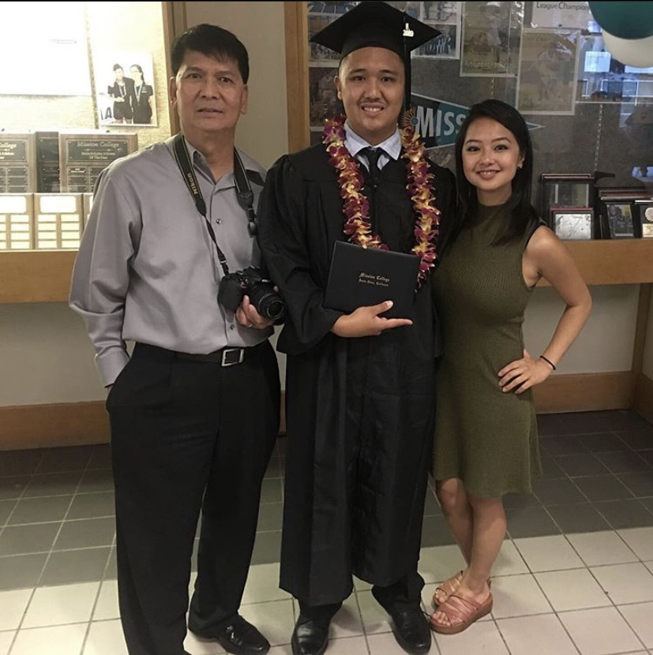

My name is, Ryan Jeremiah Rita De Lemos, I am a third year transfer student here at San Jose State University. My major is Graphic Design. There is one video game inspired me to become a Graphic Design was Jak 2 from PlayStation 2 game. I promised myself that I want to create video games or desgin video games covers. Learning new techniques of Adobe software as much as possible when I'm still in school.
Left=Dad Middle=Me Right=Sister